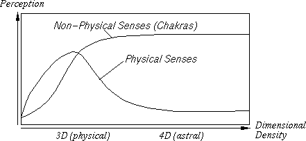
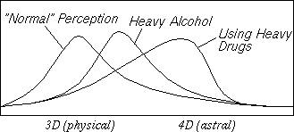
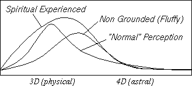
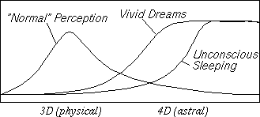
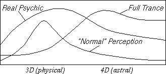
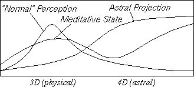
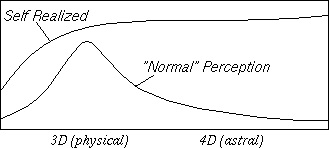

Rene K. Mueller
I like to share some thoughts on perception, because in several texts and fragments in RKMCorner I mentioned this issue quite often, without much explanation (as Space- and Beamships, Interdim. Traveling). There is not an easy way to describe it, and therefore I made some simplifications:
One main simplication is summarizing the non-physical senses and relating them directly to the physical senses. Another simplification is the subtle realm of astral I put beside the physical reality.
Anyway, I will try to add more details later (ie. on 3rd-eye and general non-physical sensing).

The Physical Senses are giving the embodied entity a certain overview of influences, which are mainly physical influences. Those who have developed these senses well are called normal people, in a societal and psychological context. On the other hand, those who have not developed these sense well are called handicapped or disabled people, because they don't have the same perception and manipulative ability to operate in the physical reality as the average person of society perceives.
The Chakras are the Non-Physical Senses that function for all embodied beings (whether they are conscious of it or not), and are more or less connected to the consciousness mind, but denied in the belief-system. With extending of the belief-system or the allowance of the mind, the non-physical senses become valuable for the conscious mind and finally integrate to become part of the general senses. This allowance can be trained by meditative methods, as several yoga paths or shamanistic ways, and the techno-shamanistic has become quite popular today (ie. hemisync technology etc).

"Normal" Perception is kind of a simplified perception-range of reality. All modern (western) belief-systems or sciences are based on a common perception, this most common perception I refere to as "normal" perception. But this perception does not cover the reality we fully interact with, therefore society provides some methods to expand this somewhat closed perception. One example is alcohol, which is primarily opens the solar-plexus, where a lot of people have blockages. Using alcohol often releases the emotional blockages, and at heavy usage, people change their behaviour in a rather of child-like or childish way (even openly). Some get angry and violent and express all the hidden fears they keep normally behind their blockages. Some start to express love to everyone and don't follow "socieally acceptable" patterns, and for example, sing to express their true inner feelings.
A more extreme example is that using heavy drugs as LSD and heroin. Those who take drugs are opening the perception quite much, but at a high price, so to speak. The blockages get removed fast and violently, and people experiences beautiful realities as mid-astral, but also experience hell-like realities in lower-astral, where lot of bounded entities are stuck. The chemical-induced removal of the blockages produces deep woundes in the astral-body and finally also in physical body. So the the body gets programmed for the usage of the drugs, creating a deep dependency, an addiction.

Spiritual Experienced describe people, who may be interested in ie. mystic traditions, yoga traditions or in general, reality expanding belief-systems and concepts. But this also includes those who are looking for some inner truth in their lifes, which does not always have to do with a certain religion or dogmatic (closed) belief-system, but much more to do with an inner longing to look for more meaning in life: a process of inner searching, instead of merely fulfilling desires in materialistic ways. As a result, they become more aware of ecological, political and economical problems and transformations and perceive for example, Earth, much more as a whole living system and being (as result of their expanding of perception and understanding).
Non-Grounded (Fluffy), describes some people who get very addicted to scriptures and paranormal phenomena without having own experiences, but feel very drawn to these things. They pay much attention to the ideas, and deny often physical reality and are trying to escape physical reality for some reason. Perhaps because they are sad somehow, because they can't relate to subtle reality with their own physical life. I call them fluffy people, because they are talking about heavenly realms, but are unable to arrange their physical life at all. They lack the grounding, which means the acceptance to live here on physical. Some signs are forgetting things (like appointments) or even happenings in their life, because they don't focus on those physical happenings. This fluffiness is a common "sickness" among awakening people, and they need some assistance to ground them well again, that they can arrange their physical life first, and then opening to subtle planes and larger perception. Without grounding, their physical life may likely fail in almost any activity: like their job, relationships, etc.

Vivid Dreams may be psychological dreams for emotional rebalancing of daily-experiences, but also may be so called lucid dreams. Those impressions are close enough being held after awakening in the body, and are often remembranced several hours in conscious mind. This is also where Dream-Works starts, as the remembrance will be written into a booklet and this way helps it to become a part of the consciousness and perception. As a result, the concepts of reality get more flexible, and dreams become generally valuable for the conscious mind.
Unconscious Sleeping is like waking up in the morning, and having no memories at all, about whether one had astral-traveling or psychological dreams. It can be related to stress in daily life, or even a period in physical life where a strong focus is necessary. When thse people start getting too many impressions of dreams and aren't ready to handle them, tend to be fluffy as described above already. In this way, it's a natural rejection, for various reasons.

Real Psychic I refere to beings who perceive other people's aura or feel other people's energies by their own developed chakras, and have experiences with non-physical beings on visual basis, which means they have expanded their visual-perception (ie. 3rd-eye) to be able to see into astral-realm already, without any special relaxing preparation.
Full Trance is like moving the already enhanced perception more into astral-realm, and being almost physically unconscious. It's feels like from an intense vivid day-dream, and ranges to an unconscious trance, where the being leaves the body with the astral-body. This procedure has to be carefully used for channeling, because other astral-beings enter the body (even for channeling) and affect the physical body with their presence. After they leave, the body of the channel keeps energies not made by the original owner of the body, and this can cause many problem if the procedure is not guided by well experienced people, who know how to handle such problems.

Meditative State I perceive as the state, where the physical reality is perceived through a veil of fog, sound and visual impressions are perceived, but don't distract the inner peace of the person. Often they experience impressions of nature, devas and elementals which feel attracted to this state of consciousness.
Astral-Projection is where only a small part of consciousness remains in physical body. In this state many things can be perceived and experienced, as nature-spirits, traveling in astral-planes with lot of realities, and also visiting other planets and their astral-planes. It's really huge subject and we just started to understand that this itself is a very flexible reality, where our thoughts are taking place immediatly, but are rarely realized in conscious-mind. The whole Out Of Body Experience (OOBE) research deals with this, and today becomes more and more respected even by traditional science (Monroe Institute).

Self Realized is being conscious of physical, without denying or judging it, but also being aware of the astral and more subtle realms. Realized in this way is to be able to incorporate everything, and relate, perceive, and understand as spiritual experience. Then everything is spiritual, nothing is just physical or astral, and there is no veil which separates this, no separating concepts. In eastern tradition they are called self-realized souls, or enlighted-souls. One sign of a self-realized soul is that the person radiates a kind of presence which attracts everyone, it's unconditional Love. There are no condititions on perception!